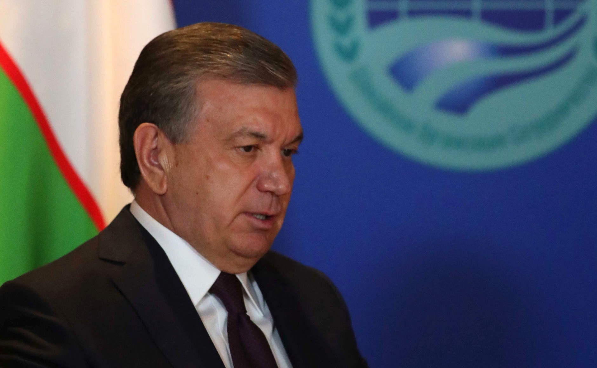

Узбекистан и Южная Корея подписали в Сеуле 13 документов
По итогам переговоров Мирзиёева и Ли Чжэ Мёна стороны обменялись документами о сотрудничестве в сфере критических минералов, искусственного интеллекта и обороны. Встреча прошла накануне первого саммита «Корея — Центральная Азия» 16 сентября.

Сеул, 14 сентября 2026 года. По итогам переговоров президента Узбекистана Шавката Мирзиёева и президента Южной Кореи Ли Чжэ Мёна две страны обменялись 13 документами и меморандумами.
Что подписано
Документы охватывают транспорт, гражданскую авиацию, сельское хозяйство, туризм, образование, искусственный интеллект, техническую помощь, регулирование медицинской продукции, охрану окружающей среды, интеллектуальную собственность и архивное дело.
Korea Eximbank и Министерство инвестиций Узбекистана договорились определить проекты и рассмотреть возможности финансирования по шести приоритетным направлениям: критические минералы, искусственный интеллект и дата-центры, умные города, промышленный комплекс для корейских компаний, фармацевтика и биотехнологии, а также пищевая индустрия, индустрия красоты и культуры.
Самый конкретный результат в оборонной сфере — соглашение компании Korea Aerospace Industries с узбекским партнёром о сотрудничестве в области оборонной промышленности. В опубликованном заключении корейского правительства не указаны ни тип техники, ни сумма контракта.
В цифрах
- Подписанных документов: 13
- Перспективные инвестиционные проекты: ~12 млрд долларов
- Программа стратегического сотрудничества с Korea Eximbank: 8 млрд долларов
- Меморандум о ТЭО по высокоскоростным поездам: 8 поездов
- Предприятий с корейским капиталом в Узбекистане: более 700
- Накопленные корейские инвестиции: более 8 млрд долларов
Поезда и биобанк
Стороны также подписали меморандум о начале технико-экономического обоснования ещё по восьми высокоскоростным поездам. Это предварительный этап, а не контракт на поставку. В 2024 году Узбекистан договорился о покупке шести высокоскоростных поездов у компании Hyundai Rotem.
Отдельный меморандум предусматривает создание в Узбекистане национального центра генома и биобанка — «Biome Center» — в рамках корейского Фонда экономического сотрудничества и развития (EDCF).
От транспортной инфраструктуры, здравоохранения и ответов на климатический кризис до цепочек поставок критических минералов, искусственного интеллекта и цифровой трансформации, а также обороны — мы можем расширить горизонты взаимовыгодного сотрудничества.
— Ли Чжэ Мён, президент Южной Кореи (из перевода The Korea Herald, 14.09.2026)
Контекст
Встреча прошла накануне первого саммита «Корея — Центральная Азия», который принимает Сеул. Саммит намечен на 16 сентября, на него приглашены главы государств Узбекистана, Казахстана, Кыргызстана, Таджикистана и Туркменистана.
В Узбекистане работают более 700 предприятий с корейским капиталом, в том числе Samsung, LG, Lotte и KIA. Объём накопленных корейских инвестиций превысил 8 млрд долларов.